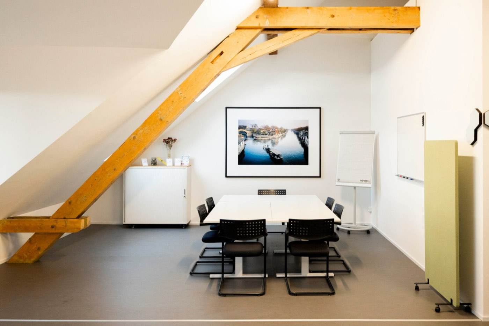
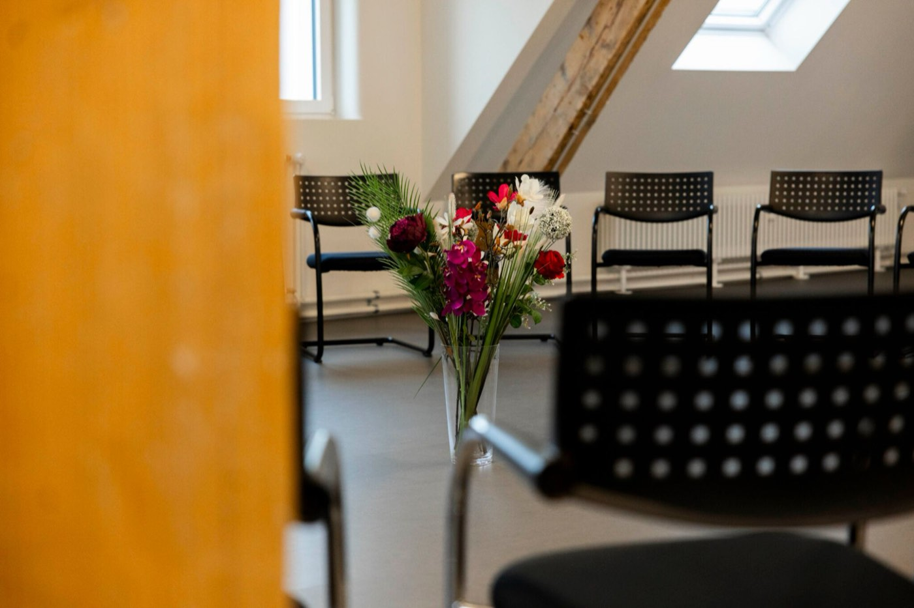
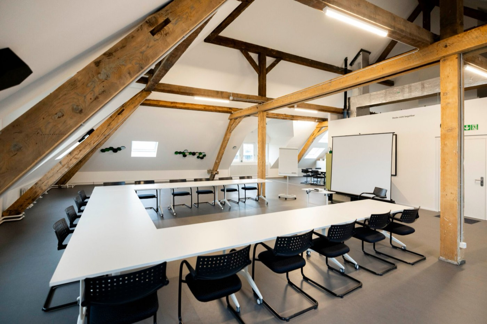

Teamsupervision
Für Teams in Wohngruppen und stationären Einrichtungen: herausfordernde Situationen gemeinsam verstehen, die Zusammenarbeit stärken und Entlastung finden.
Supervision und Coaching für die Soziale Arbeit
Herausforderndes Verhalten fordert auch Teams heraus. Ich begleite Fachkräfte in der Jugendhilfe dabei, schwierige Situationen zu verstehen, Belastungen zu teilen und handlungsfähig zu bleiben.
In Freiburg im Breisgau und Basel
Kontakt aufnehmenFür Teams in Wohngruppen und stationären Einrichtungen: herausfordernde Situationen gemeinsam verstehen, die Zusammenarbeit stärken und Entlastung finden.
Raum für Ihre beruflichen Fragen: belastende Erlebnisse, Ihr eigenes Handeln und Ihre Rolle im Team.
Für Fachkräfte in der Sozialen Arbeit, zum Beispiel in der Praxisanleitung oder bei der Einarbeitung neuer Mitarbeitender.
Mein Schwerpunkt ist die Arbeit mit Jugendlichen und jungen Erwachsenen im Heimkontext, die herausforderndes Verhalten zeigen. Ich begleite Prozesse und bringe dort, wo es hilft, auch Fachwissen aus der Praxis ein, etwa aus der Traumapädagogik.
In Basel arbeite ich in hellen Räumen unter dem Dach: ein Raum für kleinere Gruppen und Einzelgespräche und ein grosser Seminarraum für Teams. In Freiburg im Breisgau treffen wir uns nach Absprache.



Meine Arbeit orientiert sich an den Grundhaltungen der Traumapädagogik. Was Kindern und Jugendlichen Halt gibt, hilft auch Teams und Fachkräften.
Alles, was ein Mensch zeigt, hat einen Sinn in seiner Geschichte.Wir suchen diesen Sinn gemeinsam, bei den Jugendlichen, im Team und bei Ihnen selbst, statt vorschnell zu bewerten.
Du bist gut, so wie du bist.Ich begegne Ihnen mit Respekt und echtem Interesse. Fehler dürfen angeschaut werden, ohne Schuldzuweisung.
Ich trau dir was zu und überfordere dich nicht.Sie bestimmen mit, worum es geht und in welchem Tempo wir arbeiten. Gemeinsam klären wir Ziele und mögliche Lösungswege.
Du hast besondere Lebenskompetenzen.Sie sind die Fachleute für Ihren Arbeitsalltag. Ich bringe Wissen und Erfahrung ein, die Lösungen entwickeln wir zusammen.
Jede:r hat jederzeit ein Recht auf grösstmögliche Klarheit.Ich lege offen, wie ich arbeite und warum. Ablauf und Vereinbarungen sind für alle nachvollziehbar.
Viel Freude trägt viel Belastung.Auch schwere Themen vertragen Humor. Ein gemeinsames Lachen entlastet und stärkt das Team.
Die Leitsätze stammen aus: Fachverband Traumapädagogik e.V. und Fachverband Traumapädagogik chTP (Hrsg.): Standards für traumapädagogische Konzepte in der stationären Kinder- und Jugendhilfe. 2. Auflage, März 2025.
Mich interessiert schon lange, was in Menschen und zwischen ihnen geschieht: das Unbewusste und die Art, wie wir Beziehungen gestalten. Diese Neugier hat mich zur Psychologie und zum Studium der Sozialen Arbeit an der Katholischen Hochschule für Sozialwesen Berlin geführt. Schon während des Studiums habe ich mit jungen Menschen gearbeitet, die herausforderndes Verhalten zeigen und besonderen Unterstützungsbedarf haben. Ausserdem habe ich Erfahrungen in der interkulturellen Arbeit gesammelt.
Dass ich einmal Supervisor werden möchte, wusste ich früh. Zuerst wollte ich aber selbst Erfahrung in der Praxis sammeln. Nach einem Jahr auf Reisen durch Südeuropa bin ich mit meiner Familie nach Freiburg im Breisgau gezogen. Seit 2020 arbeite ich im Zentrum für Sozialpädagogik und Psychotherapie (ZSP) in Basel, zuerst im stationären Bereich, heute als Stationsleiter im betreuten Wohnen.
Als Praxisanleiter begleite ich Studierende bei ihrer Kompetenzerwerbsplanung: Ziele formulieren, Schritte planen, Entwicklung sichtbar machen. Im CAS habe ich mich vertieft mit der Einarbeitung neuer Mitarbeitender beschäftigt, besonders mit Übergängen. Übergänge bedeuten Abschied vom Alten und Ankommen im Neuen. Sie lösen Stress aus und brauchen Aufmerksamkeit, damit sie gelingen. Daraus ist meine Mitarbeit an der Konzeptentwicklung für die Einarbeitung im ZSP entstanden. Konzeptarbeit gehört seither zu meinem Alltag.
Das Thema Trauma begleitet mich seit der Schulzeit. Seit 2024 vertiefe ich es in der zertifizierten Weiterbildung in Traumapädagogik am ZSP. Mich überzeugt, wie praxisnah sie ist: Sie hilft Jugendlichen wie Fachkräften, Gefühle wahrzunehmen, zu verstehen und voneinander zu unterscheiden, und verändert so die Beziehung zwischen ihnen. Diese Haltung prägt auch meine Supervision.
In einer Zeit grosser Veränderungen in der Organisation habe ich viel über Teamdynamik, Führung und mich selbst gelernt. Ich habe erlebt, wie vielschichtig Arbeitsbeziehungen sind und wie daraus Konflikte entstehen. Meine Stärke ist es, verborgene Themen und Einflüsse sichtbar und besprechbar zu machen. Das ist nicht immer bequem, bringt aber oft wieder Bewegung in Situationen, die festgefahren sind.
Zurzeit bin ich Supervisor und Coach in Ausbildung.
Ich freue mich auf Ihre Nachricht, ob für ein erstes Gespräch oder eine Frage zu meinem Angebot.